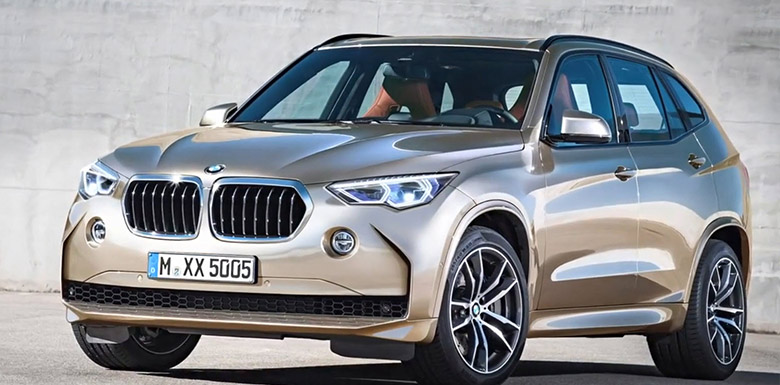

BMW 5 |
|
| more images | Новая модель автомобиля BMW X5 2018 года выпуска на фото, сделанных шпионами, выглядит красиво. И ведь это впечатление создается в голове у человека, лишь только взглянет он на нее, обернутую камуфляжной сеткой. А представляете, что будет, если ее снять? Потеря дара речи, кажется, неминуема. И все же слишком многого — РЕВОЛЮЦИОННОГО — ожидать от авто не стоит. На фотографиях видно, что авто стало агрессивнее и добрее одновременно, но в то же время сохранило свои былые качества. |
Porsche Cayenne |
|
| more images | Porsche Cayenne — пятиместный среднеразмерный спортивный кроссовер производства немецкой автомобилестроительной компании Porsche. Автомобиль создан при активном участии концерна Volkswagen. Производство первого поколения (Type 955/9PA) началось в 2002 году, в Северной Америке реализация началась с 2003 года. Название модели, Cayenne, образовано по имени столицы Французской Гвианы. |